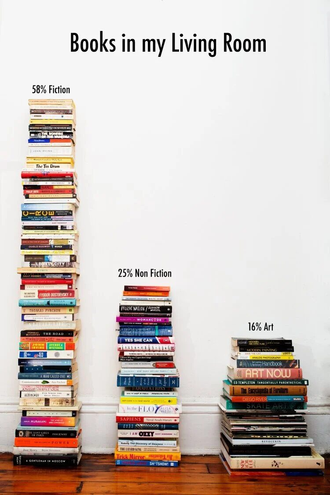
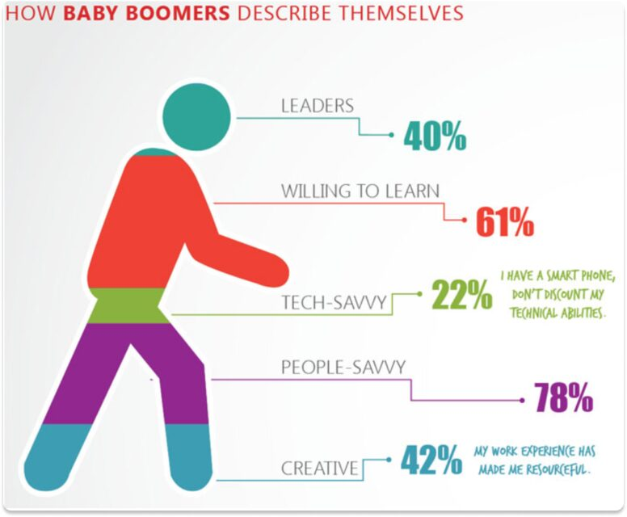
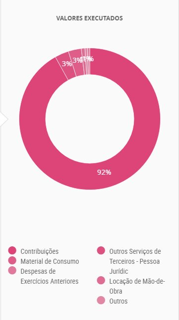
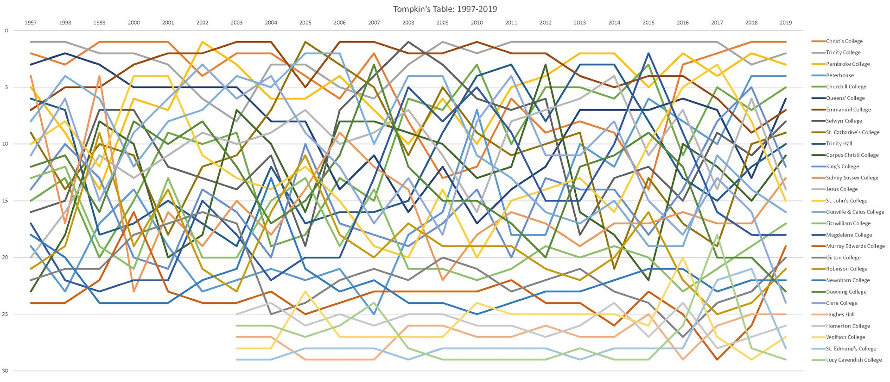
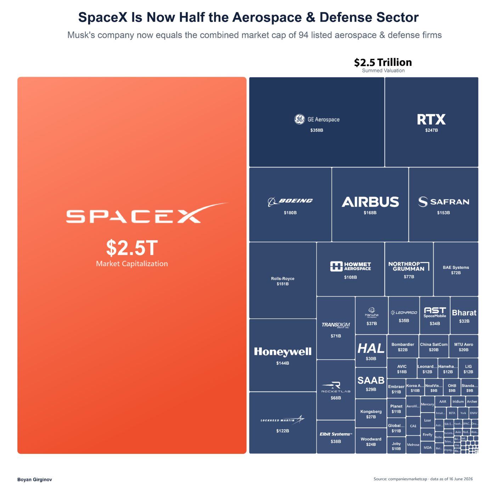
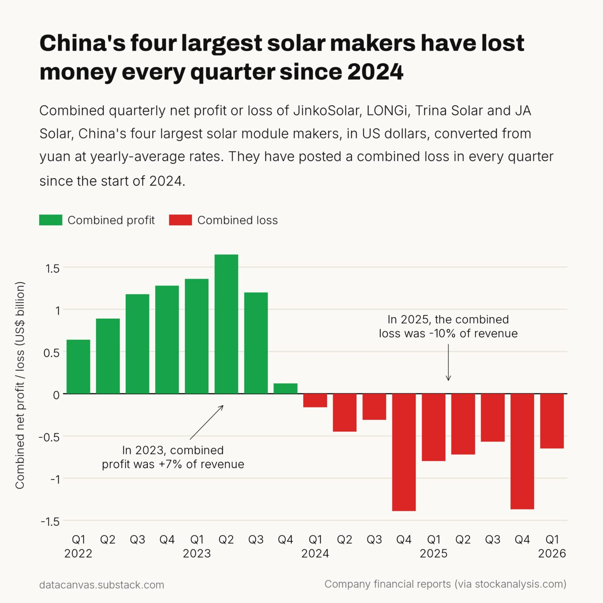
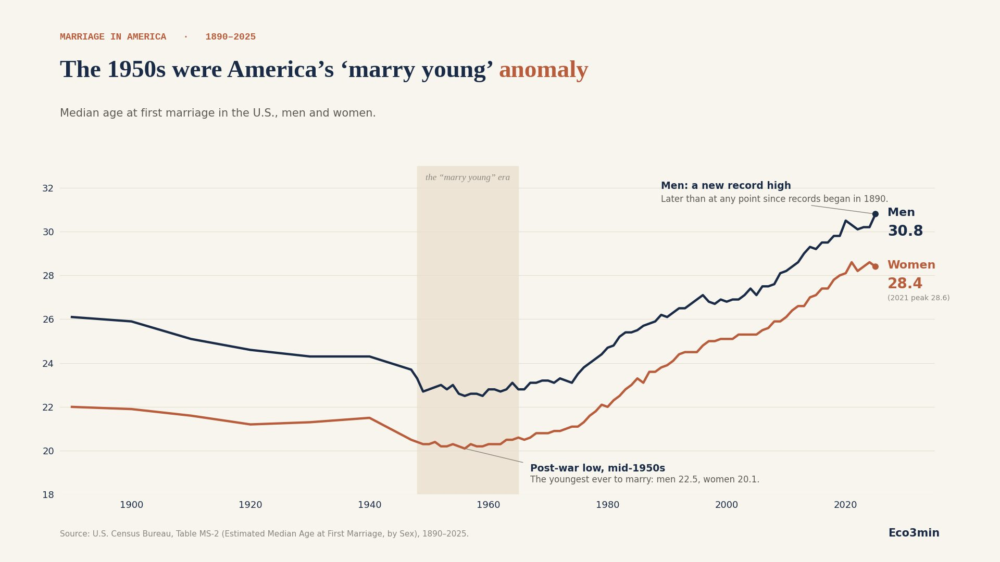
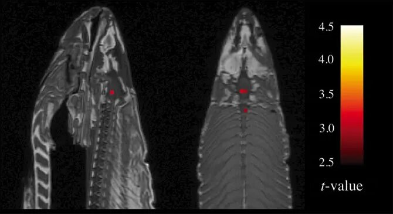

Storytelling e Boas Práticas
Comunicação com dados
Rodrigo Nicola
A responsabilidade pela idoneidade, originalidade e licitude dos conteúdos didáticos apresentados é do professor.
Proibida a reprodução, total ou parcial, sem autorização.
Lei nº 9610/98








Do gráfico ao recado
PerguntaQue subsistema mais cresceu na semana?
Medir o que a pergunta pede
Tirar o que distrai
Destacar só o que importa
Título que diz a conclusão
Fonte e limites
Um gráfico não é uma história
Primeira semana de 2025
Quatro subsistemas e um feriado
O Sul cresceu 15% em cinco dias
Vale acompanhar a próxima semana
Uma semana não é tendência
Knaflic · Storytelling with Data, 2015 · ONS, Curva de Carga Horária, 02 a 07/01/2025
Para quem decide, a resposta vem primeiro
Minto · The Pyramid Principle, 1987
O mesmo recado, dois formatos
O Sul cresceu 15% na primeira semana de 2025
Entre 02 e 07/01, a carga média diária do Sul passou de 13.347 para 15.353 MWmed, a maior alta entre os subsistemas.
Uma semana não é tendência. Fonte: ONS.
O Sul cresceu 15% em cinco dias
Fonte: ONS, Curva de Carga Horária

Dizer o que não se sabe
- Fonte e dataO ONS pode revisar o que já publicou.
- RecorteUma semana de janeiro, com feriado, não fala pelo ano.
- TratamentoValor preenchido não é valor medido.
Explorar não é explicar
Knaflic · Storytelling with Data, 2015 · ONS, Curva de Carga Horária, 02 a 07/01/2025
Personas do desafio
Personas fictícias · o tema é o pico de carga
Desafio: um pitch para a persona
1. Explore aula3/exploracao.ipynb e escolha os gráficos da sua persona.
2. Gere as imagens em aula3/recado.py:
3. Monte o pitch na ferramenta que preferir e apresente em 3 minutos.
O pitch deck
- A resposta, no título
- A evidência: o gráfico
- Contexto e limites
- O que fazer
Notebook no VS Code: rmnicola.github.io/pecege-ons
Obrigado!
Rodrigo Nicola
Referências e dados
Knaflic, C. N. (2015). Storytelling with Data. Wiley.
Tufte, E. R. (2001). The Visual Display of Quantitative Information. 2ª ed. Graphics Press.
Bennett, C. M.; Baird, A. A.; Miller, M. B.; Wolford, G. L. (2010). Neural Correlates of Interspecies Perspective Taking in the Post-Mortem Atlantic Salmon. Journal of Serendipitous and Unexpected Results, 1(1), 1–5.
Minto, B. (1987). The Pyramid Principle: Logic in Writing and Thinking. Pitman.
Exemplos: Eco3min · datacanvas · Boyan Girginov · r/dataisugly · viz.wtf
ONS — Curva de Carga Horária, recorte de 01 a 07/01/2025, extraído em 13/10/2026